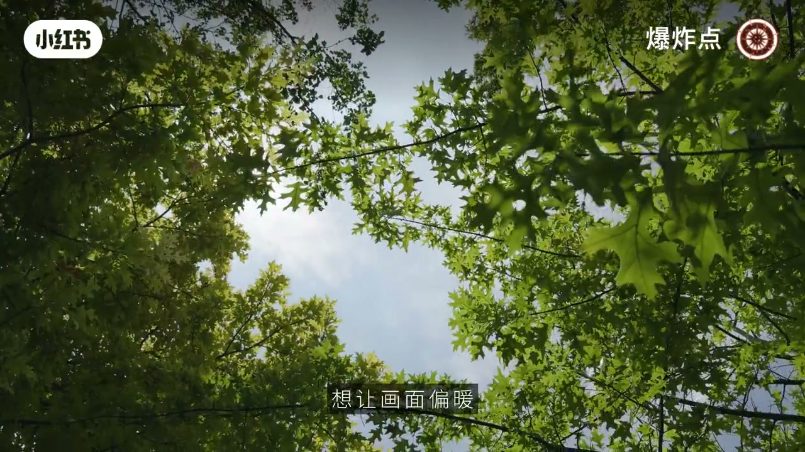
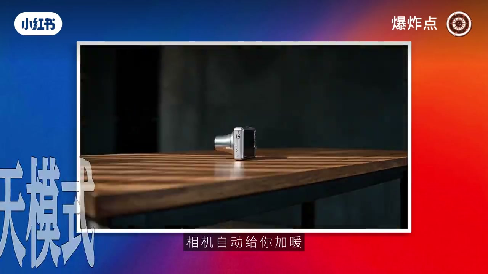
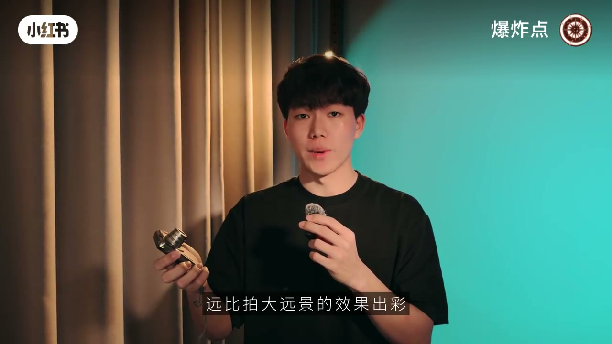
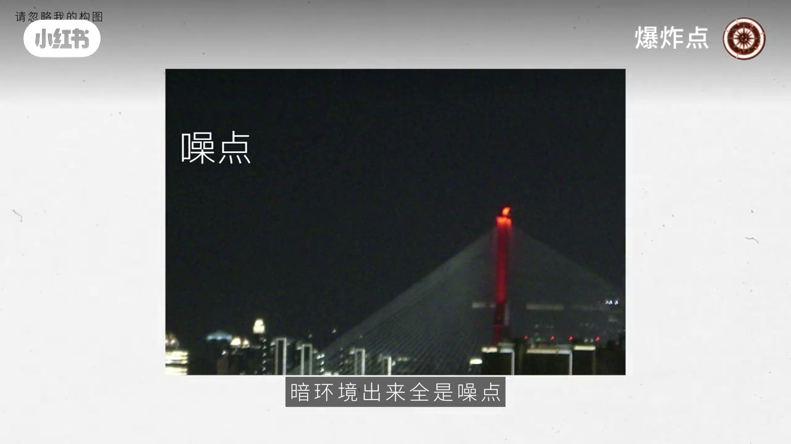

内容要点
「爆炸点」面向只会开自动的 CCD 用户：自然光下用阴天/荧光灯白平衡控冷暖；近距离拍美食、摆件、人像更吃 CCD 色彩；闪光灯人像稳；自动夜景易噪，先别硬刚。出片差往往是场景选错，不是机器不行。
知识结构
偏暖选阴天（约6000K相机加暖）；偏冷清透选荧光灯（约4000K）；机型有差，建议实拍对比。
近拍质感与纹理；闪光灯人像新手不易翻车。
自动夜景噪点重；手动+脚架+低ISO门槛高，建议先放一放；不必盲目追网红款。
CCD 出片先靠色温选择与场景匹配：近距与闪光灯稳，自动夜景先避；懂色温，手里的自动机也能「变可口」。
00:00-00:51自动档也能控色：阴天暖、荧光灯冷
开场点题：很多 CCD 只会开自动。自然光下想画面偏暖，选阴天模式；想偏清透冷调，选荧光灯模式。作者给出原理：阴天约6000K，相机会加暖；荧光灯约4000K，画面更冷透。不同机型效果有差，建议实拍对比。
懂色温后同年代老 CCD 逻辑相近，能最大程度避免片子发灰。


00:51-01:23近距离与闪光灯：新手最不易翻车
拍不好往往不是机器不行，是场景不对。日常虽可拍大远景，但近距离（美食细节、小摆件、人像景别到特写）更能吃死质感与纹理，CCD 色彩才能发挥。
另有开闪光灯拍人像：多数 CCD 效果不错，被列为新手不易翻车的玩法。

01:23-02:03夜景先放一放：感光度上限就在那
不建议硬试：绝大多数便携 CCD 自动夜景暗部全是噪点。手动+脚架+低 ISO 部分机型可救，但门槛高，新手可先放一放——不是技术不行，是小底感光度上限低。
收尾：不必盲目追贵网红款；欢迎评论区交流私藏技巧与机型。

完整转录（51段）
以下文本由 Whisper medium 模型自动转录，可能存在少量识别误差，已尽可能修正。
所有CCD只会开自动模式
在自然光环境下
想要画面偏暖就选阴天模式
让画面偏清透冷掉就选阳光灯模式
但不同机型效果有差异
建议实拍对比
原理很简单
阴天模式色温约6000K
相机自动给你加暖
阳光灯模式色温约4000K
画面自然漂亮滑透
懂了色温你手里的CCD立马变可口
很多同年代的老CCD逻辑也都差不多
能最大程度的避免片色发灰的问题
弄朋友拍不好其实不是机器不行
是没选对合适的拍摄场景
日常游戏拍摄
虽然也能拍大远景
但近距离的画面效果更好
像美食细节
日常小摆件还有拍人像
不管景景还是特写
一近拍能把物件的细腻质感
和画板纹理吃得死死的
这么一来
CCD的色彩和质感都能完全发挥出来
有每排大远景的效果出彩
还有开闪光灯拍人像
基本所有的CCD都能拍出不错的效果
这都是新手最不容易翻车的玩法
除此之外
也有几个场景不建议大家应试
绝大多数变形CCD
在自动模式下拍夜景
暗环境出来全是噪点
很难出片
如果是手动模式加三角架加低ISO
部分机型还能抢救一下
但操作门槛不顶
先手先放一放就好
其实不是你技术不行
实质的这小机器本身感光度上限就很低
晚上光线也暗
硬拍出来全是颗粒噪点
画表完全没法看
其实不用盲目追求贵的网红款
那CCD可能比你想象中的能打
大家还有什么私藏的CCD出品小技巧
或者说你用哪款CCD不可以用
都可以在评论区一起分享
好,那我们下期再见